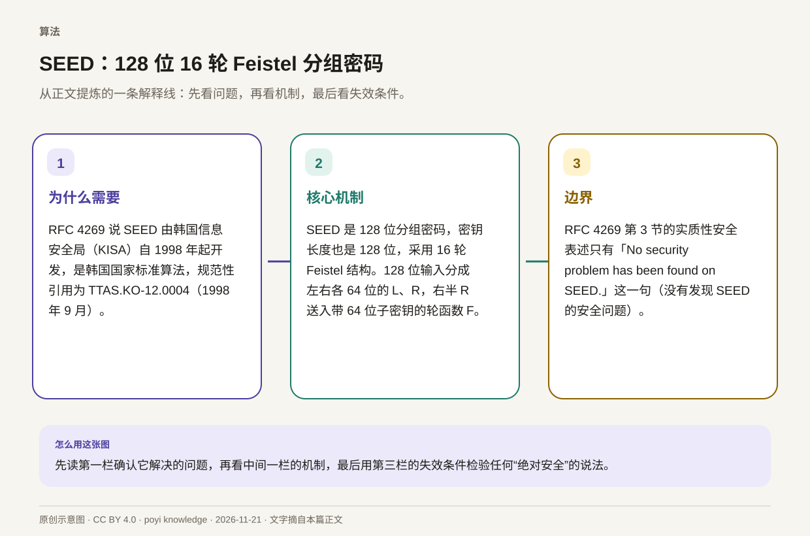
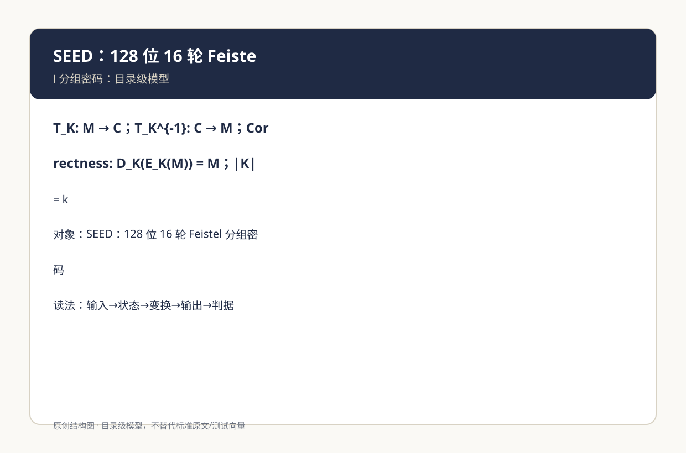

原理与机制
算法：SEED 韩国内对称加密（SEED）。SEED 是 128 位分组密码，密钥长度也是 128 位，采用 16 轮 Feistel 结构。128 位输入分成左右各 64 位的 L、R，右半 R 送入带 64 位子密钥的轮函数 F。第 1 到第 15 轮做交换和混合，第 16 轮只更新 L、不再交换：
for i = 1..15:
T = R
R = L XOR F(Ki, R)
L = T
L = L XOR F(K16, R)
C = L || R
解密是加密的逆过程：使用同一轮结构，但按 K16、K15、…、K1 的顺序使用子密钥。轮函数 F 把 64 位输入 R 分成高 32 位 R0 和低 32 位 R1，子密钥 Ki 分成 Ki0、Ki1：
t0 = R0 XOR Ki0
t1 = R1 XOR Ki1
G1 = G(t0 XOR t1)
G2 = G(G1 + t0)
G3 = G(G2 + G1)
R0' = G3 + G2
R1' = G3
所有加法都是模 2^32 的无符号加法。RFC 4269 第 2.1 节把 F 写成一行嵌套公式，上面的分步形式与它等价，并由附录 B 的轮中间值验证。G 函数把四个输入字节 X3||X2||X1||X0 映射为四个输出字节 Z3||Z2||Z1||Z0，其中 X3 是最高字节：
m0 = FC, m1 = F3, m2 = CF, m3 = 3F
Z0 = (S0(X0) & m0) XOR (S1(X1) & m1) XOR (S0(X2) & m2) XOR (S1(X3) & m3)
Z1 = (S0(X0) & m1) XOR (S1(X1) & m2) XOR (S0(X2) & m3) XOR (S1(X3) & m0)
Z2 = (S0(X0) & m2) XOR (S1(X1) & m3) XOR (S0(X2) & m0) XOR (S1(X3) & m1)
Z3 = (S0(X0) & m3) XOR (S1(X1) & m0) XOR (S0(X2) & m1) XOR (S1(X3) & m2)
Z = Z3 || Z2 || Z1 || Z0
SEED 有两个 8x8 S-box S0、S1，各 256 项。为了加快实现，规范还定义了四个扩展 SS-box，它们是按字节拼接的 32 位表：
SS0(X0) = (S0&m3) || (S0&m2) || (S0&m1) || (S0&m0)
SS1(X1) = (S1&m0) || (S1&m3) || (S1&m2) || (S1&m1)
SS2(X2) = (S0&m1) || (S0&m0) || (S0&m3) || (S0&m2)
SS3(X3) = (S1&m2) || (S1&m1) || (S1&m0) || (S1&m3)
Z = SS0(X0) XOR SS1(X1) XOR SS2(X2) XOR SS3(X3)
附录 A 给出 S0、S1 和 SS0..SS3 的全部值；本文逐项核对，四个 SS-box 都能由 S0/S1 和掩码完整导出。密钥调度把 128 位密钥分成 Key0、Key1、Key2、Key3，每轮生成 64 位子密钥 Ki=Ki0||Ki1：
for i = 1..16:
Ki0 = G(Key0 + Key2 - KCi)
Ki1 = G(Key1 - Key3 + KCi)
if i is odd:
Key0 || Key1 = (Key0 || Key1) >> 8
else:
Key2 || Key3 = (Key2 || Key3) << 8
这里的 >> 8 和 << 8 是 64 位循环移位。奇数轮把 Key0||Key1 循环右移 8 位，偶数轮把 Key2||Key3 循环左移 8 位。16 个 KC 常数是：
KC1 = 9E3779B9 KC2 = 3C6EF373 KC3 = 78DDE6E6 KC4 = F1BBCDCC
KC5 = E3779B99 KC6 = C6EF3733 KC7 = 8DDE6E67 KC8 = 1BBCDCCF
KC9 = 3779B99E KC10 = 6EF3733C KC11 = DDE6E678 KC12 = BBCDCCF1
KC13 = 779B99E3 KC14 = EF3733C6 KC15 = DE6E678D KC16 = BCDCCF1B

为什么重要
RFC 4269 说 SEED 由韩国信息安全局（KISA）自 1998 年起开发，是韩国国家标准算法，规范性引用为 TTAS.KO-12.0004（1998 年 9 月）。它使用与当时计算技术相称的 S-box 和置换，采用 16 轮 Feistel 结构，并声称能抵抗差分分析、线性分析和相关密钥分析。RFC 4010 补充了实现层面的设计目标：SEED 在软件和硬件中都容易实现，内存占用比一些算法小，密钥生成不降低安全性，适合「such as mobile devices and smart cards」（移动设备与智能卡）等资源受限环境。它还称 SEED 是韩国国家工业协会标准，经过公开评审，被 ISO/IEC JTC 1/SC 27 和日本 CRYPTREC 认为密码学上是安全的，并广泛用于韩国电子商务和金融服务。RFC 4269 第 3 节的实质性安全表述只有一句「No security problem has been found on SEED.」（没有发现 SEED 的安全问题），随后引用 ISO/IEC JTC 1/SC 27 与 CRYPTREC 的文件。本文把它当作 2005 年 RFC 的评估，而不是对全部攻击的形式化证明。
应用与实例
CMS：RFC 4010（2005 年 2 月，Standards Track）规定 SEED 在 CMS 中的内容加密和密钥包装用法。内容加密 OID 是 id-seedCBC，使用 CBC 模式和 16 字节 IV，AlgorithmIdentifier 的 parameters 必须包含 IV，明文按 CMS 第 6.3 节填充。密钥包装 OID 是 id-npki-app-cmsSeed-wrap，其 parameters 必须省略；包装算法与 RFC 3394 的 AES 密钥包装相同，只把 AES 换成 SEED。TLS：RFC 4162（2005 年 8 月，Standards Track）为 TLS 定义 6 个 SEED CBC SHA 套件，分别是 TLS_RSA、TLS_DH_DSS、TLS_DH_RSA、TLS_DHE_DSS、TLS_DHE_RSA 和 TLS_DH_anon 各一个，编号从 0x0096 到 0x009B。RFC 8996（2021 年 3 月，BCP 195）废止对 TLS 1.0 和 TLS 1.1 的使用并禁止回退，把 RFC 4162 等文档中对最低协议版本 TLS 1.0/1.1 的引用替换为 TLS 1.2；SEED 套件本身没有被废止，仍可在 TLS 1.2 中使用。RFC 8446（TLS 1.3）附录 B.4 只定义 5 个基于 AEAD 的套件（AES-128-GCM、AES-256-GCM、ChaCha20-Poly1305、AES-128-CCM、AES-128-CCM-8），没有 SEED 套件；本文不声称 SEED 可用于 TLS 1.3。测试向量：RFC 4269 附录 B 给出四组单块向量：
B.1 K = 00000000000000000000000000000000
M = 000102030405060708090A0B0C0D0E0F
C = 5EBAC6E0054E166819AFF1CC6D346CDB
B.2 K = 000102030405060708090A0B0C0D0E0F
M = 00000000000000000000000000000000
C = C11F22F20140505084483597E4370F43
B.3 K = 4706480851E61BE85D74BFB3FD956185
M = 83A2F8A288641FB9A4E9A5CC2F131C7D
C = EE54D13EBCAE706D226BC3142CD40D4A
B.4 K = 28DBC3BC49FFD87DCFA509B11D422BE7
M = B41E6BE2EBA84A148E2EED84593C5EC7
C = 9B9B7BFCD1813CB95D0B3618F40F5122
其中 B.1 和 B.2 是互补形式：一组密钥全零、明文递增，另一组密钥递增、明文全零。本文的教学实现完整复现四组向量，并验证解密返回原明文。附录 B.1 还列出全部 16 轮的 Ki0、Ki1 以及每轮输入状态的 L0、L1、R0、R1：第 1 轮的输入就是明文，第 i 轮的输入等于第 i-1 轮后的状态。因此它同时校验密钥调度和轮函数，而不只是最终密文。本文的实现逐轮核对这张表，例如第 1 轮 Ki0=7C8F8C7E、Ki1=C737A22C，第 16 轮 Ki0=71891150、Ki1=98B255B0；第 1 行输入 L=0001020304050607、R=08090A0B0C0D0E0F，第 16 行输入 L=1A415792A02B8C54、R=19AFF1CC6D346CDB，第 16 轮后 L=5EBAC6E0054E1668、R=19AFF1CC6D346CDB。

边界与攻击面
RFC 4269 第 3 节的实质性安全表述只有「No security problem has been found on SEED.」这一句（没有发现 SEED 的安全问题）；RFC 4010 则说 SEED 能抵抗差分、线性和相关密钥分析，并被 ISO/IEC JTC 1/SC 27 和 CRYPTREC 认为安全。这些都是 2005 年文档中的评估，不是对全部攻击模型的形式化证明，也不保证未来不会出现更好的分析方法。本文不把它们扩大成绝对安全结论，也不引用未经本文核实的攻击论文来宣称 SEED 已被攻破。RFC 4269 废止 RFC 4009 的原因是 RFC 4009 的 F 函数和 SS-box 定义有歧义，而不是算法被攻破；算法本身没有改变。实现者应以 RFC 4269 的清晰定义为准，避免照抄旧伪代码。SEED 在协议中的位置需要区分：它是韩国国家标准算法，2005 年的 RFC 文件称其广泛用于韩国电子商务和金融服务；CMS 的 id-seedCBC 和密钥包装 OID 仍是 Standards Track 规范的一部分；BCP 195 废止 TLS 1.0/1.1 的使用并把 RFC 4162 的最低版本引用更新为 TLS 1.2，SEED 套件本身仍可使用，而 TLS 1.3 没有 SEED 套件。把曾被标准化当成在最新协议中默认可用是不准确的。实现层面，本文的教学实现按字节查 S0/S1 和 SS-box，不是常量时间实现，缓存和时序可能泄露与密钥相关的访问模式；它不生成密钥，不实现工作模式、IV 管理、填充、完整性保护或侧信道防护，不能用于保护真实数据。SEED 只定义分组密码，协议层必须自己处理这些事项。
历史与背景
SEED 由 KISA 自 1998 年起开发。RFC 4269 把 TTAS.KO-12.0004（1998 年 9 月）列为规范性引用，并称 SEED 是韩国国家标准算法，广泛用于韩国有线和无线通信中的电子商务和金融服务。RFC 4009 是较早的 IETF 描述；RFC 4269 由 H.J.Lee、S.J.Lee、J.H.Yoon、D.H.Cheon 和 J.I.Lee 在 2005 年 12 月发表，类别是 Informational，并废止 RFC 4009，以修正其 F 函数和 SS-box 定义的歧义，算法本身不变。RFC 4010 在 2005 年 2 月以 Standards Track 规定 CMS 用法；RFC 4162 在 2005 年 8 月以 Standards Track 定义 6 个 TLS 套件；RFC 8996 在 2021 年弃用 TLS 1.0/1.1 并更新 RFC 4162。ISO/IEC 18033-3:2010 第二版把 SEED 与 AES、Camellia 一起列为 128 位分组密码，该版本在 2025 年 9 月仍被确认有效。本文的 SEED 实体只指这一种分组密码；AES、Camellia 是其他实体，CMS、TLS 是使用 SEED 的协议，ISO/IEC 18033-3 是标准化文件，不是算法本身。
逐步示例与核验
复算示例
取标准或公开测试向量中的一组参数，按“输入—执行—输出”记录：先写出该条目的形式式 (C=E_K(P;r),\qquad P=D_K(C))；再按规范顺序执行每一步，最后把输出与独立实现或标准向量逐字节对照。若没有可引用的数值向量，就只记录结构步骤，不伪造输出。
参考出处
- Wikipedia search entry for SEED 韩国内对称加密. https://zh.wikipedia.org/w/index.php?search=SEED%20%E9%9F%A9%E5%9B%BD%E5%86%85%E5%AF%B9%E7%A7%B0%E5%8A%A0%E5%AF%86
- Handbook of Applied Cryptography (Menezes, van Oorschot, Vanstone). https://www.cacr.math.uwaterloo.ca/hac/